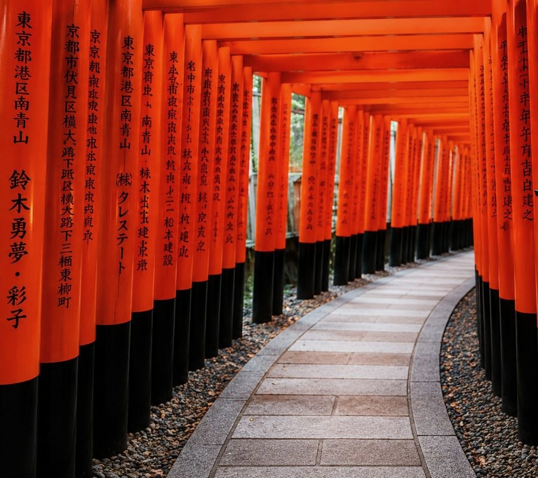
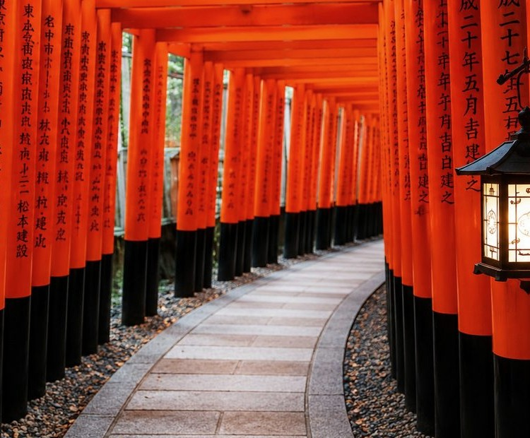
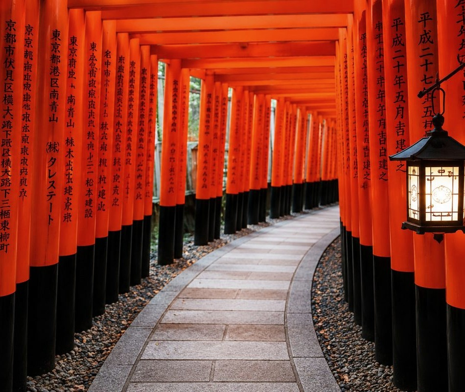

QUICK HELP
Up to 3 focused questions.
A simple entry point when you need a few researched answers by email. No appointment required.
クイックヘルプ
最大3つの質問に回答。
少数の疑問だけを個別に調べて、メールで回答する入口メニューです。予約や面談は不要です。
LORUNEI
lor-OO-nay
Personal Japan Trip Planning
Thoughtful research and trip planning for independent travelers who want to make better choices in Japan—without spending weeks figuring everything out.
A Considered Answer.
考え抜いた提案をお届けします。
There is no shortage of information about Japan. The harder part is knowing what is actually right for you.
LORUNEI helps you make those decisions with personal research, local knowledge, and real-world hospitality experience.
Learn more about LORUNEI →日本の情報はあふれています。難しいのは、その中から自分に本当に合うものを見極めることです。
LORUNEIは、丁寧なリサーチ、現地感覚、ホテルで培った判断力で、その選択をお手伝いします。
LORUNEIについて →
SERVICES
Start small with a few focused questions, get a considered answer, commission deeper research, or plan the trip as a whole.
See sample deliverables →QUICK HELP
A simple entry point when you need a few researched answers by email. No appointment required.
クイックヘルプ
少数の疑問だけを個別に調べて、メールで回答する入口メニューです。予約や面談は不要です。
JAPAN ANSWER
For a specific Japan travel decision where generic search results are not enough.
ジャパン・アンサー
ホテル、エリア、旅程など、1つの重要な判断を個別に調べておすすめをまとめます。

JAPAN RESEARCH
Compare options, understand trade-offs, and receive a focused research brief.
ジャパン・リサーチ
複数の選択肢を比較し、違い・注意点・おすすめ理由を調査レポートとしてまとめます。
PRIVATE JAPAN PLANNING
For travelers who want the entire journey considered—destinations, stays, dining, experiences and logistics.
プライベート・ジャパン・プランニング
行き先、滞在、食、体験、移動まで、旅全体を一つにつないで個別に組み立てます。

FOUNDER
Masayasu Wakihama brings 20+ years in five-star hospitality, including InterContinental, Nikkei experience, and a decade in Los Angeles.
Meet Masayasu →運営者
Masayasu Wakihamaは、InterContinentalを含む5つ星ホテルで20年以上、日経での経験、ロサンゼルスでの10年間を背景に、日本と海外旅行者双方の感覚から旅を考えます。
Masayasu Wakihamaについて →PROCESS
ご利用の流れ
FAQ
No. LORUNEI provides travel research, consultation, information and advisory support. You make and pay for third-party bookings directly.
Yes. First-time travelers are a strong fit, especially when neighborhood choices, transport, pacing and reservations feel overwhelming.
Yes. Research and planning can cover destinations throughout Japan depending on scope.
よくある質問
いいえ。LORUNEIは旅行リサーチ、相談、情報提供、アドバイスを行うサービスです。ホテル、交通、レストラン等の予約・契約・支払いはお客様ご自身で行っていただきます。
はい。エリア選び、移動、日程配分、予約の優先順位などが分かりにくい初訪日の方には特に向いています。
はい。ご依頼内容に応じて、日本各地の調査・プランニングに対応します。
START YOUR JAPAN PLAN
Send your inquiry here. The form is submitted directly—your email app will not open.
相談をはじめる
このページから直接送信できます。メールアプリは起動しません。